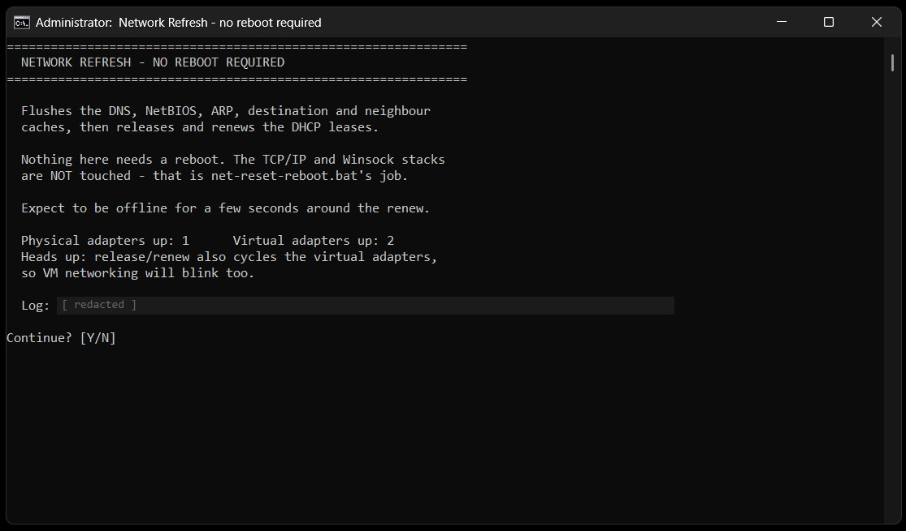
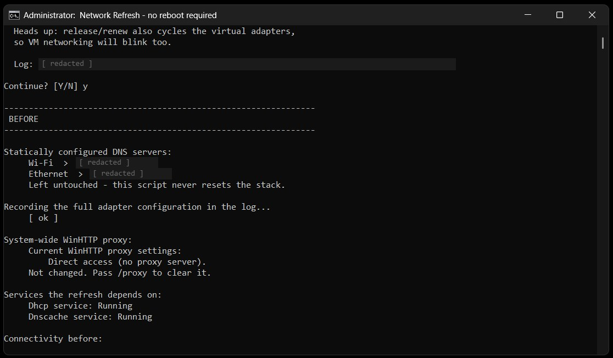
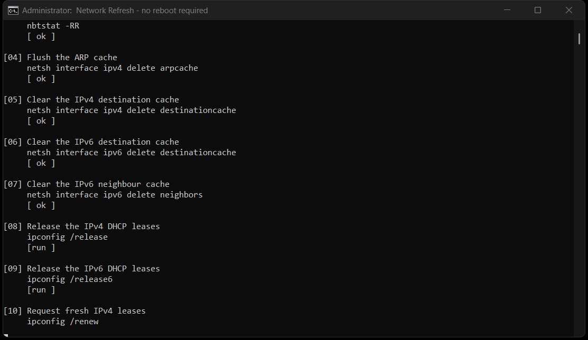
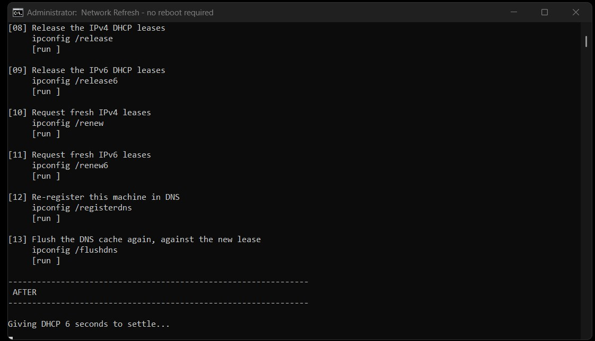
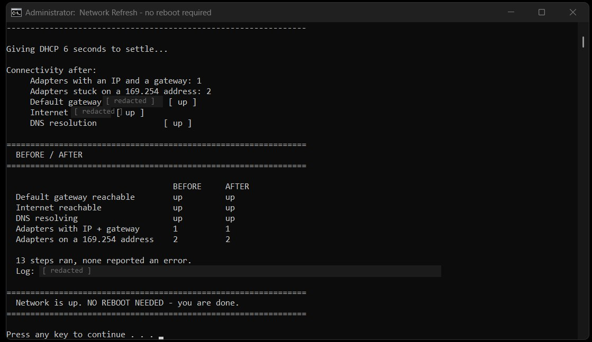

Network Refresh
net-reset-lite.bat
Batch · PowerShell · netsh · Windows Networking
Status: [ ACTIVE ]
Network Refresh is the first thing to try when a connection misbehaves. It clears the DNS, NetBIOS, ARP and route caches and renews DHCP leases without a reboot, then proves whether it worked. If the network is still down, it points to Network Stack Reset.
Checks use Test-Connection and Resolve-DnsName, because ipconfig, nslookup and ping can report success when the connection is still broken. Results are shown as a before/after table.
Key Features
- Clears DNS, NetBIOS, ARP and route caches, and renews DHCP without a reboot
- Before/after table covering gateway, internet, DNS, adapters and failed DHCP
- Checks that the DHCP and DNS client services are running, and shows the proxy
- Optional adapter restart for physical adapters only; VMware and Hyper-V networks keep running
- Rejects unknown options and escapes quotes when elevating
- Language-independent checks that work on non-English Windows
- Exit codes that other scripts can use
What This Project Demonstrates
- Diagnostic rigour: proving a fix instead of assuming it
- Input validation, even in a batch script
- Composable tools that other scripts can call
- Care for virtual machine networks while troubleshooting the host
Notes
The script is published on GitHub with its full documentation.
Screenshots




